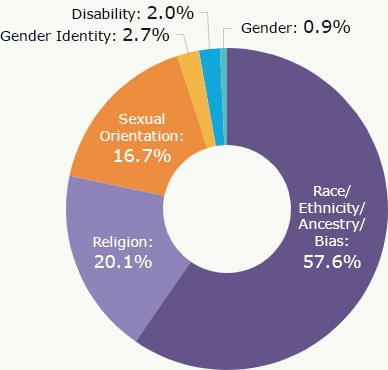

Nowadays, you would expect that everybody is treated equally. Sadly, that's not the case. Many minorities today like people of color and LGBT members are being targeted especially.
Hate crimes against minorities is becoming a huge problem and it's becoming so common it doesn't even seem like a problem anymore. Especially now due to the pandemic, people of color like black people and asians are being beaten up, killed, and mocked for something they can't change. According to Stop Asian hate, 2,800 hate crimes against asian people has increased since March 2020. In 2019, the FBI reported that 55.8% of hate crimes were due to race/ethnicity, 16.8% was because of sexuality, and 3.8 was because of gender. Recently, a spa full of asian people in Atlanta was attacked by a white man and all that the authorities said was that he had a bad day. If a person of color did that, they would be called so many horrible things. LGBT memebers are also very mistreated, being called homophobic slurs and being hate crimed just for being themselves. While laws are being made to protect minorities, that doesn't stop people from being hateful.
In NYC, hate crime rates this year increased by 73%. POC are being targeted especially now due to the pandemic. Recently a transgender man was killed and it's even more tragic since it is June(pride month), meaning he wasn't able to celebrate. So far this year, 239 police reports have been made just for hate crimes with an increase of 318.8% compared to last year but due to biasness, not all of the reports have been solved solved.
While it might seem like there isn't much you can do, there are ways to help! You can sign petitions, go to peaceful protests, or post about it on social media. You can also call helplines and donate to orginizations like The Trevor Project and Victimsofcrime.org to help support people who have gone through hate crimes. It may seem like this will do nothing, but these actions can help bring awareness to others. Hate crimes will never be completely over, but they can be decreased.
